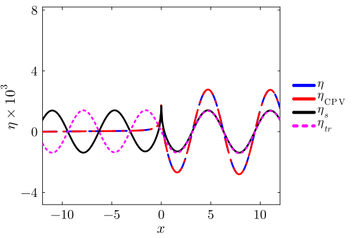
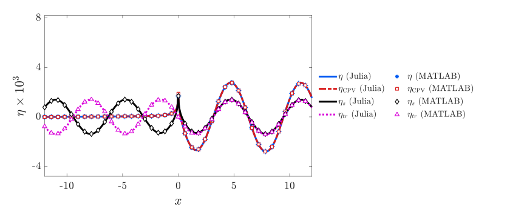

Pure Gravity — Zero Capillarity Limit (Manuscript §3.1)
Setting $\alpha = 0$ removes capillary forces entirely. The dispersion simplifies to $\chi(k) = \sqrt{\beta k}$ and the steady-state integral acquires a single Cauchy principal-value pole at $k = \beta$. This page presents the full analytical decomposition into $\eta_s, T_1–T_4^\pm$ terms and an independent numerical CPV verification.
Below eqns. (3.1) and (3.2a,b,c) are obtained by substituting $\alpha=0$ in eqn. (2.8) in the manuscript,
\[\eta(x,t) = \eta_{s}(x) + \eta_{tr}^{(1)}(x,t) + \eta_{tr}^{(2)}(x,t) \tag{3.1}\]
where,
\[ \begin{align} \dfrac{\eta_{s}(x)}{F_0} &\equiv \dfrac{1}{2\pi\left(1+\rho_r\right)}\int_{-\infty}^{\infty}dk\; \dfrac{\exp\left(ikx\right)}{|k| - \beta},\quad 0 < \beta \leq 1 \nonumber\\ \dfrac{\eta_{tr}^{(1)}(x,t)}{F_0} &\equiv - \dfrac{1}{4\pi(1-\rho_r)}\int_{-\infty}^{\infty}dk\;\dfrac{k\;\exp\left[-i\left(k(t-x) + t\sqrt{\beta|k|}\right)\right]}{k+ \sqrt{\beta|k|}}, \nonumber\\ \dfrac{\eta_{tr}^{(2)}(x,t)}{F_0} &\equiv - \dfrac{1}{4\pi(1-\rho_r)}\int_{-\infty}^{\infty}dk\;\dfrac{k\;\exp\left[-i\left(k(t-x) - t\sqrt{\beta|k|}\right)\right]}{k- \sqrt{\beta|k|}}. \end{align} \tag{3.2a,b,c}\]
It may be further shown using principal value techniques that (see proof here)
\[\frac{\eta_s(x)}{F_0} = \frac{1}{\pi(1+\rho_r)}\left[-\pi\sin\!\left(\beta|x|\right) + \int_0^\infty dy\, \frac{y\,e^{-|x|y}}{\beta^2+y^2}\right], \quad 0<\beta\leq1,\; -\infty<x<\infty \tag{3.3}\]
In expression (3.3), $\eta_{s}(x)$ is a symmetric function of $x$, implying a symmetric response upstream and downstream of the forcing at $x=0$. However, a contribution to the steady-state also comes from the time-dependent term in eqns. (3.2b),(3.2c). As shown in the proof(here) these transient terms may be further simplified to obtain the following analytical representation valid for all $x,t$ i.e.
\[\eta_{\mathrm{tr}}(x,t) \equiv \eta_{\mathrm{tr}}^{(1)}(x,t) + \eta_{\mathrm{tr}}^{(2)}(x,t) = \left\{\mathbb{T}_1(x) +\mathbb{T}_2(x,t) +\mathbb{T}_3(x,t) +\mathbb{T}_4(x,t)\right\}F_0, \tag{3.4a}\]
where,
\[\mathbb{T}_1(x) \equiv \mp\frac{1}{1+\rho_r}\sin(\beta x) \tag{3.4b}\]
\[\mathbb{T}_2(x,t) \equiv -\frac{4\beta^{-1}}{\pi(1+\rho_r)} \int_0^\infty dv\; v^2 \frac{\exp\!\left(\mp2av^2\pm2bv\right)}{\beta+\left(2v-\beta^{1/2}\right)^2} \left[\beta^{1/2}\cos\!\left(\beta^{1/2}tv\right) \pm \left(2v-\beta^{1/2}\right)\sin\!\left(\beta^{1/2}tv\right)\right] \tag{3.4c}\]
\[\mathbb{T}_3(x,t) \equiv \frac{\beta^{-1/2}}{\pi(1+\rho_r)}\left(1+\frac{t}{2(t-x)}\right)\sqrt{\frac{\pi}{2|a|}} \left[\cos\!\left(\frac{b^2}{|a|}\right)\left\{\frac{1}{2}\mp\mathrm{C}\!\left(b\sqrt{\frac{2}{\pi|a|}}\right)\right\} + \sin\!\left(\frac{b^2}{|a|}\right)\left\{\frac{1}{2}\mp\mathrm{S}\!\left(b\sqrt{\frac{2}{\pi|a|}}\right)\right\}\right] \tag{3.4d}\]
\[\mathbb{T}_4(x,t) \equiv -\frac{1}{\pi(1+\rho_r)}\int_0^\infty dv\;\frac{\cos\!\left(av^2+2bv\right)}{v+\beta^{1/2}} \tag{3.4e}\]
where, $a \equiv t-x, \; b \equiv \dfrac{t\sqrt{\beta}}{2}$, the upper signs in $\mathbb{T}_1(x),\mathbb{T}_2(x,t), \mathbb{T}_3(x,t)$ are used for $x<t$, while lower signs are for $x > t$. The Fresnel integrals $\mathrm{C}(\cdot)$ and $\mathrm{S}(\cdot)$ in eqn. (3.4d) are defined as
\[\mathrm{C}\left(b\sqrt{\frac{2}{\pi |a|}}\right) \equiv \int_{0}^{b\sqrt{\frac{2}{\pi |a|}}}dt\; \cos\left(\frac{\pi t^2}{2}\right),\quad \mathrm{S}\left(b\sqrt{\frac{2}{\pi |a|}}\right) \equiv \int_{0}^{b\sqrt{\frac{2}{\pi |a|}}}dt\; \sin\left(\frac{\pi t^2}{2}\right).\tag{3.4f}\]
In expressions (3.4), the time-independent term, $\mathbb{T}_1(x)$ (eqn. 3.4b), is asymmetric with the same amplitude as the first term on the right hand side of eqn. (3.3). As a result, these two terms reinforce each other for $x>0$ but cancel for $x<0$. Further, we note that as $\rho_r\rightarrow 1$ $\left(\beta = \dfrac{1-\rho_r}{1 + \rho_r}\rightarrow 0\right)$, the terms diverge. This is physically reasonable because in this limit ($\rho_r\rightarrow 1$), gravity vanishes and in the absence of capillary forces as well (i.e. $\alpha=0$ that we are currently assuming), there remains no restoring force to resist deformation due to the external pressure. The analytical strategy is clear now: provided one can show that $\mathbb{T}_2(x,t\rightarrow\infty)\rightarrow0$, $\mathbb{T}_3(x,t\rightarrow\infty)\rightarrow0$ and $\mathbb{T}_4(x,t\rightarrow\infty)\rightarrow0$, one obtains the expected steady-state lacking waves upstream (except for small localised deformation of the interface due to the localised integral in eqn. (3.3)) and sinusoidal waves downstream ($x>0$) with wavenumber $\beta$.
Substituting the $\eta_s, T_1$–$T_4$ terms together gives the full transient-plus-steady solution $\eta(x,t)$ [eqn. (3.1)], and, as an independent cross-check, the original CPV integral can be evaluated directly, bypassing the $\eta_s,T_1–T_4$ decomposition entirely.
Numerical evaluation
The integral expressions $\eta(x,t)$ (eqn. (3.1) of the manuscript), $\eta_s(x)$ (eqn. (3.3) of the manuscript) and $\eta_{tr}(x,t)$ (eqn. (3.4) of the manuscript) are evaluated numerically, at $x=-2$ and $t_{\dim}=1\,\mathrm{s}$, using both Julia and MATLAB with the codes below. Each analytical term $\eta_s, T_1$–$T_4$ (eqns. 3.3, 3.4b–e) is written out directly; $\eta_s = F_0\,T_0$, $\eta_{tr} = F_0\,(T_1+T_2+T_3+T_4)$, and $\eta = \eta_s + \eta_{tr}$. As an independent check, $\eta$ is also compared against a direct Cauchy-principal-value evaluation $\eta_{\mathrm{CPV}}$ of the combined integrand.
using QuadGK, FresnelIntegrals
"""Concrete physical and quadrature parameters for the pure-gravity IVP."""
struct PureGravityParams
ρᵣ::Float64
β::Float64
sqrtβ::Float64
F₀::Float64
εCPV::Float64
atolCPV::Float64
rtolCPV::Float64
atolTransformed::Float64
rtolTransformed::Float64
kₘₐₓAnalytical::Float64
kₘₐₓCPV::Float64
frontBand::Float64
end
function makeParams()
U, g = 26.7046, 981.0
ρₗ, ρᵤ = 1.0, 0.001
ρᵣ = ρᵤ / ρₗ
β = (1.0 - ρᵣ) / (1.0 + ρᵣ)
ℓc = U^2 / g
F₀ = 0.01 * 72.0 / (ρₗ * U^2 * ℓc)
return PureGravityParams(ρᵣ, β, sqrt(β), F₀,
1e-6, 1e-10, 1e-8, 1e-10, 1e-8,
100.0, 100.0, 1.0)
end
# Eqn. (3.3): steady principal-value contribution T₀.
function T₀(x::Float64, p::PureGravityParams)
xₐ = abs(x)
β² = p.β^2
Ilocal, _ = quadgk(y -> exp(-y * xₐ) * y / (β² + y^2), 0.0, Inf;
atol=p.atolTransformed, rtol=p.rtolTransformed)
return (-π * sin(p.β * xₐ) + Ilocal) / (π * (1.0 + p.ρᵣ))
end
# Eqn. (3.4b): closed-form sign-dependent term T₁.
@inline function T₁(x::Float64, t::Float64, p::PureGravityParams)
s = x < t ? -1.0 : 1.0
return s * sin(p.β * x) / (1.0 + p.ρᵣ)
end
# Eqn. (3.4c): quadratic-exponential integral T₂.
function T₂(x::Float64, t::Float64, p::PureGravityParams)
a = t - x
s = a > 0.0 ? 1.0 : -1.0
tSqrtβ = t * p.sqrtβ
integrand = v -> begin
arg = v * tSqrtβ
numerator = p.sqrtβ * cos(arg) + s * (2.0 * v - p.sqrtβ) * sin(arg)
denominator = p.β + (2.0 * v - p.sqrtβ)^2
v^2 * exp(-s * 2.0 * v^2 * a + s * v * tSqrtβ) * numerator / denominator
end
I, _ = quadgk(integrand, 0.0, p.kₘₐₓAnalytical;
atol=p.atolTransformed, rtol=p.rtolTransformed)
return -4.0 * I / (π * (1.0 + p.ρᵣ) * p.β)
end
# Eqn. (3.4d): Fresnel-integral contribution T₃.
function T₃(x::Float64, t::Float64, p::PureGravityParams)
a = t - x
absA = abs(a)
s = a > 0.0 ? 1.0 : -1.0
b = 0.5 * t * p.sqrtβ
X = b * sqrt(2.0 / (π * absA))
prefactor = (1.0 + t / (2.0 * a)) * sqrt(π / (2.0 * absA)) /
(π * (1.0 + p.ρᵣ) * p.sqrtβ)
phase = b^2 / absA
return prefactor * (cos(phase) * (0.5 - s * fresnelc(X)) +
sin(phase) * (0.5 - s * fresnels(X)))
end
# Eqn. (3.4e): quadratic-phase cosine integral T₄.
function T₄(x::Float64, t::Float64, p::PureGravityParams)
a = t - x
tSqrtβ = t * p.sqrtβ
integrand = v -> cos(v^2 * a + v * tSqrtβ) / (v + p.sqrtβ)
I, _ = quadgk(integrand, 0.0, p.kₘₐₓAnalytical;
atol=p.atolTransformed, rtol=p.rtolTransformed, order=15)
return -I / (π * (1.0 + p.ρᵣ))
end
# Direct CPV integrand G(k;x,t); the removable pole is excluded at k = β.
@inline function combinedIntegrand(k::Float64, x::Float64, t::Float64,
p::PureGravityParams)
sqrtβk = sqrt(p.β * k)
phase = k * (t - x)
tSqrtβk = t * sqrtβk
return cos(k * x) / (π * (1.0 + p.ρᵣ) * (k - p.β)) -
k * cos(phase - tSqrtβk) / (2.0 * π * (1.0 - p.ρᵣ) * (k - sqrtβk)) -
k * cos(phase + tSqrtβk) / (2.0 * π * (1.0 - p.ρᵣ) * (k + sqrtβk))
end
function ηCPV(x::Float64, t::Float64, p::PureGravityParams)
G = k -> combinedIntegrand(k, x, t, p)
I₋, _ = quadgk(G, 0.0, p.β - p.εCPV; atol=p.atolCPV, rtol=p.rtolCPV)
I₊, _ = quadgk(G, p.β + p.εCPV, p.kₘₐₓCPV;
atol=p.atolCPV, rtol=p.rtolCPV, order=15)
return p.F₀ * (I₋ + I₊)
end
# Eqns. (3.3) and (3.4) evaluated at x = −2 and tdim = 1 s.
p = makeParams()
x = -2.0
t = 1.0 / (26.7046 / 981.0)
ηₛ = p.F₀ * T₀(x, p)
ηₜᵣ = p.F₀ * (T₁(x, t, p) + T₂(x, t, p) + T₃(x, t, p) + T₄(x, t, p))
η = ηₛ + ηₜᵣ
ηCPVvalue = ηCPV(x, t, p)
println("T₀ = ", T₀(x, p))
println("T₁ = ", T₁(x, t, p))
println("T₂ = ", T₂(x, t, p))
println("T₃ = ", T₃(x, t, p))
println("T₄ = ", T₄(x, t, p))
println("η = ", η)
println("ηₛ = ", ηₛ)
println("ηₜᵣ = ", ηₜᵣ)
println("ηCPV = ", ηCPVvalue)
println("|η − ηCPV| = ", abs(η - ηCPVvalue))T₀ = -0.8639502272578199
T₁ = 0.910043043935118
T₂ = 0.005830863275361377
T₃ = 0.0007044858552279276
T₄ = -0.0007003237060223437
η = 7.212029103433244e-5
ηₛ = -0.0011999023896811143
ηₜᵣ = 0.0012720226807154467
ηCPV = 6.979529999850479e-5
|η − ηCPV| = 2.324991035827648e-6%% Two-fluid pure-gravity IVP: analytical T0-T4 decomposition
U = 26.7046; % Base flow speed [cm/s]
g = 981.0; % Gravitational acceleration [cm/s^2]
rho_l = 1.0; % Lower-fluid density [g/cm^3]
rho_u = 0.001; % Upper-fluid density [g/cm^3]
% Characteristic scales and nondimensional density ratio
t_c = U / g;
rho_r = rho_u / rho_l;
beta = (1.0 - rho_r) / (1.0 + rho_r);
sqrt_beta = sqrt(beta);
F0 = 0.01 * 72.0 / (rho_l * U^2 * (U^2 / g));
% Quadrature tolerances
AbsTol = 1.0e-10;
RelTol = 1.0e-8;
K_MAX = 100.0;
% Evaluation point and time
t = 1.0 / t_c;
x = -2.0;
a = t - x; % a > 0 => point lies behind the wavefront
%% T0: steady (time-independent) contribution
T0a = -pi * sin(beta * abs(x));
T0b = integral(@(y) exp(-y * abs(x)) .* y ./ (beta^2 + y.^2), ...
0, Inf, 'AbsTol', AbsTol, 'RelTol', RelTol);
T0 = (T0a + T0b) / (pi * (1.0 + rho_r));
%% T1: closed-form transient term (left region)
T1 = -sin(beta * x) / (1.0 + rho_r);
%% T2: exponentially-damped oscillatory integral (left region)
T2_integrand = @(v) exp(-2.0 * v.^2 * a + v * t * sqrt_beta) .* v.^2 .* ...
(sqrt_beta * cos(v * t * sqrt_beta) + ...
(2.0 * v - sqrt_beta) .* sin(v * t * sqrt_beta)) ./ ...
(beta + (2.0 * v - sqrt_beta).^2);
T2 = -4.0 / (pi * (1.0 + rho_r) * beta) * ...
integral(T2_integrand, 0, K_MAX, 'AbsTol', AbsTol, 'RelTol', RelTol);
%% T3: Fresnel-integral contribution (left region)
b = 0.5 * t * sqrt_beta;
X = b * sqrt(2.0 / (pi * a));
prefactor = (1.0 / (pi * (1.0 + rho_r) * sqrt_beta)) * (1.0 + t / (2.0 * a));
T3 = prefactor * sqrt(pi / (2.0 * a)) * ...
(cos(b^2 / a) * (0.5 - fresnelc(X)) + ...
sin(b^2 / a) * (0.5 - fresnels(X)));
%% T4: oscillatory integral (left region)
T4_integrand = @(v) cos(v.^2 * a + v * t * sqrt_beta) ./ (v + sqrt_beta);
T4 = -1.0 / (pi * (1.0 + rho_r)) * ...
integral(T4_integrand, 0, K_MAX, 'AbsTol', AbsTol, 'RelTol', RelTol);
%% Assembled solution
eta_s = F0 * T0;
eta_tr = F0 * (T1 + T2 + T3 + T4);
eta = eta_s + eta_tr;
%% Independent CPV check: direct combined integrand G(k;x,t)
eps_pv = 1e-6;
G = @(k) cos(k.*x) ./ (pi*(1+rho_r)*(k - beta)) ...
- k .* cos(k*(t - x) - t*sqrt(beta*k)) ./ (2*pi*(1-rho_r)*(k - sqrt(beta*k))) ...
- k .* cos(k*(t - x) + t*sqrt(beta*k)) ./ (2*pi*(1-rho_r)*(k + sqrt(beta*k)));
lo = integral(G, 0, beta - eps_pv, 'AbsTol', AbsTol, 'RelTol', RelTol);
hi = integral(G, beta + eps_pv, K_MAX, 'AbsTol', AbsTol, 'RelTol', RelTol);
eta_cpv = F0 * (lo + hi);
fprintf('T0 = %.16g\n', T0);
fprintf('T1 = %.16g\n', T1);
fprintf('T2 = %.16g\n', T2);
fprintf('T3 = %.16g\n', T3);
fprintf('T4 = %.16g\n', T4);
fprintf('eta = %.16g\n', eta);
fprintf('eta_steady = %.16g\n', eta_s);
fprintf('eta_transient = %.16g\n', eta_tr);
fprintf('eta_CPV = %.16g\n', eta_cpv);
fprintf('|diff| = %.16g\n', abs(eta - eta_cpv));T0 = -0.8639502272578199
T1 = 0.910043043935118
T2 = 0.005830863275361377
T3 = 0.0007044858552279276
T4 = -0.0007003237060223437
eta = 7.212029103433244e-05
eta_steady = -0.001199902389681114
eta_transient = 0.001272022680715447
eta_CPV = 6.979529999850479e-05
|diff| = 2.324991035827648e-06The full spatial profile at $t = 183.68$ (Fig. (5h) manuscript) is computed below by integrating equations (3.1)–(3.2) directly: the combined-integrand Fourier/CPV inversion gives the total $\eta(x)$, equation (3.3) gives the steady part $\eta_s(x)$, and $\eta_{tr} = \eta - \eta_s$. The scripts below plot all four ($\eta$, $\eta_{\mathrm{CPV}}$, $\eta_s$, $\eta_{tr}$).
The following Julia profile calculation reuses PureGravityParams, makeParams, T₀–T₄, and ηCPV from the preceding pointwise-validation block. When running this profile calculation independently, include that preceding Julia block first. Below MATLAB code runs independent of previous code-block
# Copy-pasting this code in Julia-REPL, reproduces panels of Fig 5 of the manuscript, depending on the value of non-dimensional time `t`
using Plots, LaTeXStrings
# At each x, evaluate η = ηₛ + ηₜᵣ and independently evaluate ηCPV.
function computeGravityProfile(xgrid::Vector{Float64}, t::Float64,
p::PureGravityParams)
N = length(xgrid)
η = fill(NaN, N)
ηₛ = Vector{Float64}(undef, N)
ηₜᵣ = fill(NaN, N)
ηCPVvalues = fill(NaN, N)
Threads.@threads :static for i in eachindex(xgrid)
x = xgrid[i]
ηsteady = p.F₀ * T₀(x, p)
ηₛ[i] = ηsteady
if abs(t - x) > p.frontBand
ηtransient = p.F₀ * (T₁(x, t, p) + T₂(x, t, p) +
T₃(x, t, p) + T₄(x, t, p))
ηₜᵣ[i] = ηtransient
η[i] = ηsteady + ηtransient
ηCPVvalues[i] = ηCPV(x, t, p)
end
end
return η, ηₛ, ηₜᵣ, ηCPVvalues
end
function makeXGrid(; Nₓ::Int=2001, L::Float64=24.0)
xgrid = collect(range(-L / 2.0, L / 2.0; length=Nₓ))
filter!(x -> abs(x) > 1e-6, xgrid)
return xgrid
end
function makeFigure(xgrid::Vector{Float64}, η::Vector{Float64},
ηₛ::Vector{Float64}, ηₜᵣ::Vector{Float64},
ηCPVvalues::Vector{Float64})
plt = plot(xgrid, η .* 1e3; label=L"\eta", color="blue", linestyle=:dash,
xlabel=L"x", ylabel=L"\eta \times 10^{3}", legend=:outerright,
ylims=(-4.8, 8.2), yticks=[-4, 0, 4, 8], xlim=(-12, 12), lw=3)
plot!(plt, xgrid, ηCPVvalues .* 1e3;
label=L"\eta_{\mathrm{CPV}}", color="red", linestyle=:dashdot, lw=3)
plot!(plt, xgrid, ηₛ .* 1e3; label=L"\eta_s", color="black", lw=3)
plot!(plt, xgrid, ηₜᵣ .* 1e3; label=L"\eta_{tr}", color="magenta", linestyle=:dot, lw=3)
return plt
end
# Figure 5 uses t = 183.68 on x ∈ [−12,12], excluding x = 0.
default(fontfamily="Computer Modern", linewidth=3, framestyle=:box,
label=nothing, color="blue", grid=false, fg_legend=false,
background_color_legend=false, guidefontsize=16,
tickfontsize=14, legendfontsize=14)
p = makeParams()
t = 183.68
xgrid = makeXGrid()
η, ηₛ, ηₜᵣ, ηCPVvalues = computeGravityProfile(xgrid, t, p)
valid = .!isnan.(η) .& .!isnan.(ηCPVvalues)
println("max |η − ηCPV| = ", maximum(abs.(η[valid] .- ηCPVvalues[valid])))
plt = makeFigure(xgrid, η, ηₛ, ηₜᵣ, ηCPVvalues)%% Copy-pasting this code in MATLAB session, reproduces panels of Fig 5 of the manuscript, depending on the value of non-dimensional time `t`
%% Pure-gravity spatial profile at t = 183.68: eta, eta_CPV, eta_s, eta_tr
U = 26.7046; g = 981.0;
rho_l = 1.0; rho_u = 0.001;
rho_r = rho_u / rho_l;
beta = (1 - rho_r) / (1 + rho_r);
sqrt_beta = sqrt(beta);
F0 = 0.01 * 72.0 / (rho_l * U^2 * (U^2 / g));
eps_pv = 1e-6; AbsTol = 1e-10; RelTol = 1e-8; K_MAX = 100.0;
t = 183.68;
Nx = 2001;
x_grid = linspace(-12, 12, Nx);
x_grid(abs(x_grid) < 1e-6) = []; % exclude x = 0 (integrand singular there)
a_grid = t - x_grid; % a > 0 => point lies behind the wavefront
s_grid = sign(a_grid);
%% eta_s: steady part (eqn 4.3) — closed-form far term + local integral
loc = integral(@(y) exp(-y.*abs(x_grid)).*y./(beta^2 + y.^2), 0, Inf, ...
'ArrayValued', true, 'AbsTol', AbsTol, 'RelTol', RelTol);
eta_s = F0 * (-pi*sin(beta*abs(x_grid)) + loc) / (pi*(1 + rho_r));
%% eta_tr = T1 + T2 + T3 + T4 (eqns 4.4b-e), vectorized over x_grid ('ArrayValued')
T1 = -sign(a_grid) .* sin(beta * x_grid) / (1 + rho_r);
T2_integrand = @(v) v.^2 .* exp(-s_grid.*2.*v.^2.*a_grid + s_grid.*v*t*sqrt_beta) .* ...
(sqrt_beta*cos(v*t*sqrt_beta) + s_grid.*(2*v - sqrt_beta)*sin(v*t*sqrt_beta)) ./ ...
(beta + (2*v - sqrt_beta).^2);
T2 = -4/(pi*(1 + rho_r)*beta) * integral(T2_integrand, 0, K_MAX, ...
'ArrayValued', true, 'AbsTol', AbsTol, 'RelTol', RelTol);
b_grid = 0.5*t*sqrt_beta;
X_grid = b_grid*sqrt(2./(pi*abs(a_grid)));
T3 = 1/(pi*(1 + rho_r)*sqrt_beta) .* (1 + t./(2*a_grid)) .* sqrt(pi./(2*abs(a_grid))) .* ...
(cos(b_grid^2./abs(a_grid)).*(0.5 - s_grid.*fresnelc(X_grid)) + ...
sin(b_grid^2./abs(a_grid)).*(0.5 - s_grid.*fresnels(X_grid)));
T4_integrand = @(v) cos(v.^2.*a_grid + v*t*sqrt_beta) ./ (v + sqrt_beta);
T4 = -1/(pi*(1 + rho_r)) * integral(T4_integrand, 0, K_MAX, ...
'ArrayValued', true, 'AbsTol', AbsTol, 'RelTol', RelTol);
eta_tr = F0 * (T1 + T2 + T3 + T4);
eta = eta_s + eta_tr; % eqn (4.1): eta = eta_s + eta_tr, via T0-T4 decomposition
%% eta_CPV: independent cross-check via the direct combined integrand G(k;x,t)
% The k=beta pole cancels between the three terms. 'ArrayValued' integrates the
% whole x_grid in one adaptive quadrature over k (bypasses the T0-T4 decomposition).
G = @(k) cos(k*x_grid) ./ (pi*(1+rho_r)*(k - beta)) ...
- k .* cos(k*(t - x_grid) - t*sqrt(beta*k)) ./ (2*pi*(1-rho_r)*(k - sqrt(beta*k))) ...
- k .* cos(k*(t - x_grid) + t*sqrt(beta*k)) ./ (2*pi*(1-rho_r)*(k + sqrt(beta*k)));
I_lo = integral(G, 0, beta - eps_pv, 'ArrayValued', true, 'AbsTol', AbsTol, 'RelTol', RelTol);
I_hi = integral(G, beta + eps_pv, K_MAX, 'ArrayValued', true, 'AbsTol', AbsTol, 'RelTol', RelTol);
eta_cpv = F0 * (I_lo + I_hi);
fprintf('max |eta - eta_cpv| = %.6g\n', max(abs(eta - eta_cpv)));
figure('Position', [100 100 800 400]); hold on;
plot(x_grid, eta*1e3, 'b--', 'LineWidth', 2);
plot(x_grid, eta_cpv*1e3, 'r-.', 'LineWidth', 2);
plot(x_grid, eta_s*1e3, 'k-', 'LineWidth', 2);
plot(x_grid, eta_tr*1e3, 'm:', 'LineWidth', 2);
xlabel('x', 'FontSize', 32); ylabel('\eta \times 10^3', 'FontSize', 32);
set(gca, 'FontSize', 20);
xlim([-12 12]); ylim([-4.8 8.2]); yticks([-4 0 4 8]);
legend({'\eta','\eta_{CPV}','\eta_s','\eta_{tr}'}, 'Location', 'eastoutside', 'FontSize', 15);

Asymptotic form of the transient integral(s) and discussion - section 3.1.1 in the manuscript.
In order to see the transient behaviour of the time-dependent integrals $\mathbb{T}_2(x,t),\mathbb{T}_3(x,t)$ and $\mathbb{T}_4(x,t)$, it is useful to revert to eqns. 3.2(b), (c) in the manuscript which maybe re-written as $\int_0^\infty \dfrac{k}{k+\sqrt{\beta k}} \cos\left\{t\left(k+\sqrt{\beta k}\right)-kx \right\}\,dk$ and $\int_0^\infty\dfrac{k}{k-\sqrt{\beta k}} \cos\left\{ t\left(k-\sqrt{\beta k}\right)-kx \right\}\,dk$ respectively. It may then be shown using the method of stationary-phase (see large-time transient-asymptotics proof) that for $t\to\infty$:
\[\begin{align} \int_0^\infty \frac{k}{k+\sqrt{\beta k}} \cos\left\{t\left(k+\sqrt{\beta k}\right)-kx\right\}\,dk &\sim -\left(\dfrac{60}{\beta^3}\right)t^{-4} \nonumber \\[8pt] \int_0^\infty \frac{k}{k-\sqrt{\beta k}} \cos\left\{t\left(k-\sqrt{\beta k}\right)-kx\right\}\,dk &\sim 2\pi\beta\sin(\beta x) - \sqrt{\pi\beta}\;t^{-1/2}\cos\left[\frac{\beta(t+x)}{4}-\frac{\pi}{4}\right] \tag{3.5a,b} \end{align}\]
It is clear from these expressions that the slower decay is of the form $t^{-1/2}$. In the large-time transient-asymptotics proof ,comparisons of these asymptotic estimates alongwith numerical solutions to the integrals on the left hand side of eqns. (3.5a, b) are provided.